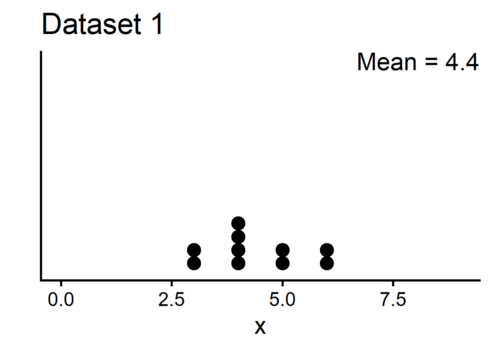
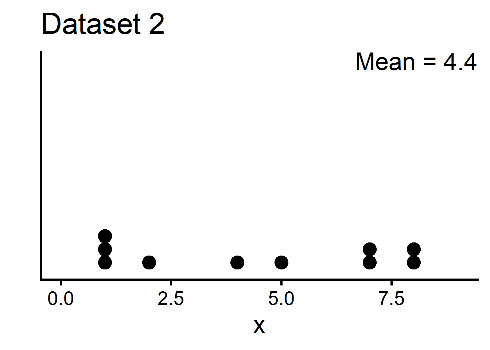
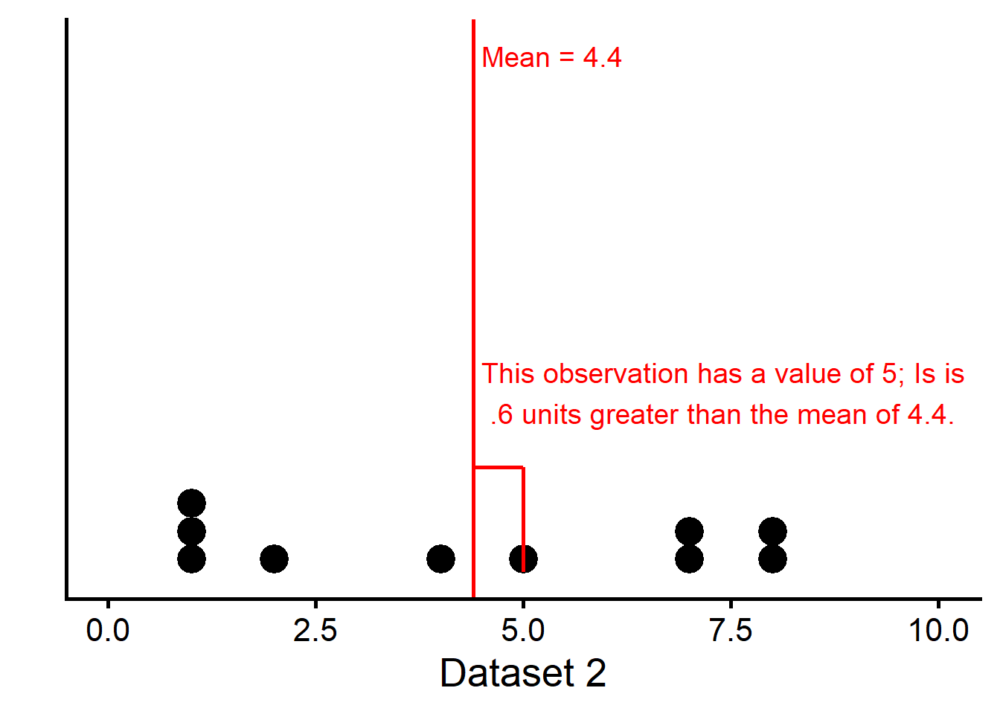
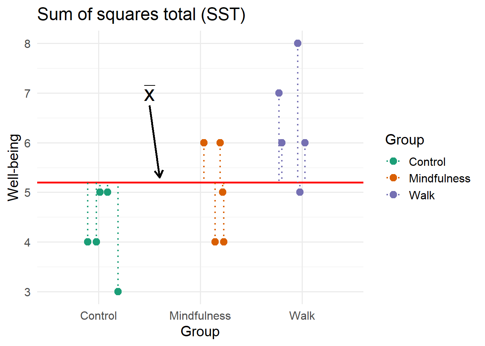
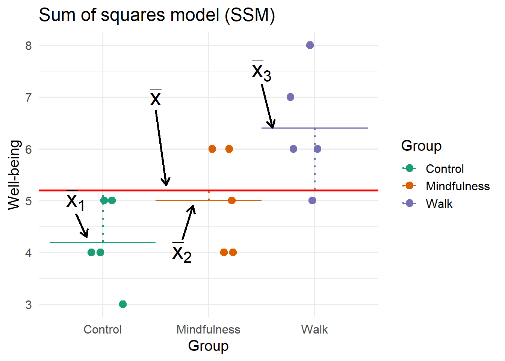
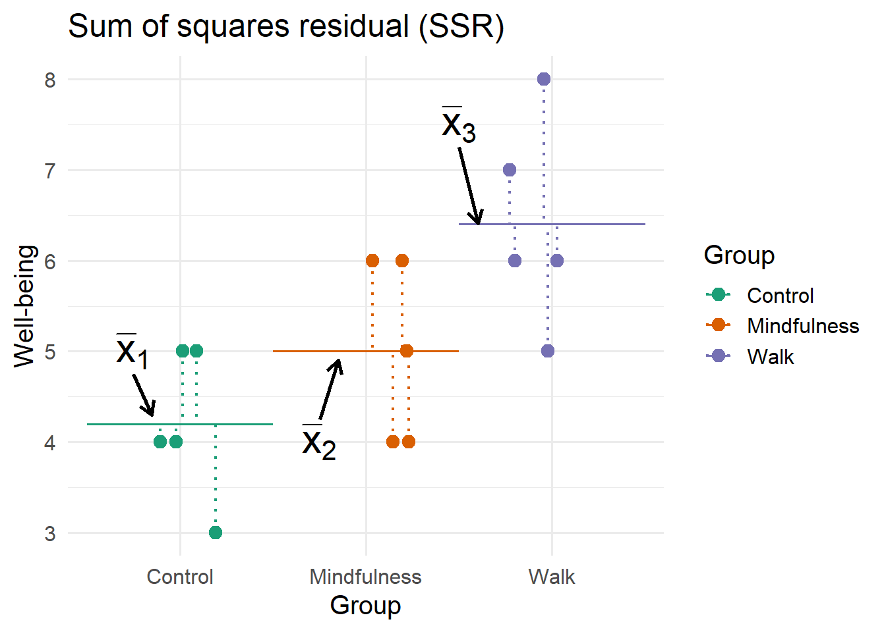
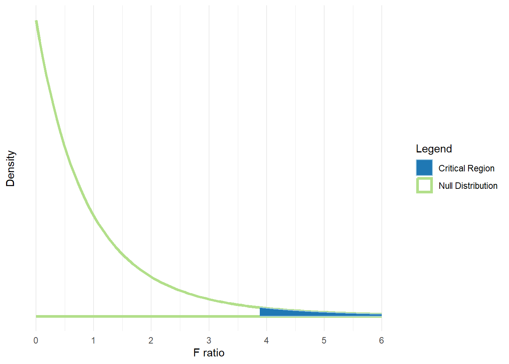
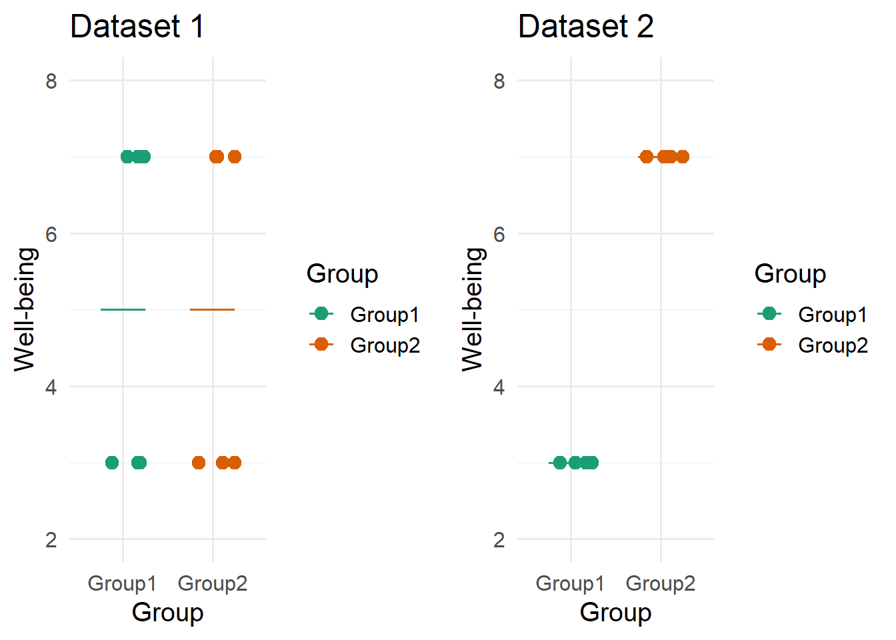

Variability in ANOVA
Overview
This interactive statistics module is intended to review concepts regarding the variability of a single quantitative variable. We consider its variability in the context of linear models such as ANOVA
This module is intended as to be non-technical, with the intended audience being social science undergraduates. It is also intended to supplement instruction regarding such concepts.
Learning outcomes
The module is divided into two sections. By the end of each section, it is expected that students should be able to do the following:
- Review
- Understand how variance and standard deviation are computed.
- Understand visualizations and conceptual descriptions of variability based in part on the sample variance formula.
- Analysis of variance (ANOVA)
- Understand how variance is partitioned in a one-way between subjects ANOVA.
- Be able to articulate how changes in the different sources of variance may affect the omnibus F-test.
- Apply knowledge of the sources of variances to inform the chances of rejecting the null hypothesis for the omnibus test.
Part 1: Review of Variability and Variance
Example Datasets
These two datasets have the same mean. Yet, dataset 1 is clustered around the mean; dataset 2 is more spread out.

Dataset 1
| x |
|---|
| 6 |
| 5 |
| 3 |
| 5 |
| 6 |
| 4 |
| 3 |
| 4 |
| 4 |
| 4 |
Dataset 2
| x |
|---|
| 5 |
| 2 |
| 1 |
| 7 |
| 4 |
| 8 |
| 7 |
| 1 |
| 1 |
| 8 |
Variability, sum of squared deviations
This “spread” of the data can be conceptualized as variability, or the degree to which data points are different from each other.
One way to conceptualize variability is to consider how close data points are to the sample mean (\(\bar{x}\)).
Sample mean: \(\bar{x}\)
We can determine how close a given observation is to the mean by simply computing a deviation between the score and the sample mean, \(x_i - \bar{x}\). In other words, subtract the sample mean from the score.
Deviation (between observation and mean): \(x_i - \bar{x}\)
The subscript \(i\) is an index or placeholder for a single observation

In this example from Dataset 2 and for one observation, \(x_i - \bar{x} = 5 - 4.4 = 0.6\).
On the way to getting an overall picture of variability for a sample, we could first compute deviations for all of the scores in the sample. Here are all of the deviations for the scores in these datasets:
| x | Deviations |
|---|---|
| 6 | 1.6 |
| 5 | 0.6 |
| 3 | -1.4 |
| 5 | 0.6 |
| 6 | 1.6 |
| 4 | -0.4 |
| 3 | -1.4 |
| 4 | -0.4 |
| 4 | -0.4 |
| 4 | -0.4 |
| x | Deviations |
|---|---|
| 5 | 0.6 |
| 2 | -2.4 |
| 1 | -3.4 |
| 7 | 2.6 |
| 4 | -0.4 |
| 8 | 3.6 |
| 7 | 2.6 |
| 1 | -3.4 |
| 1 | -3.4 |
| 8 | 3.6 |
Next, we compute squared deviations, \((x_i - \bar{x})^2\). That is, square the deviations that we computed above.
Squared Deviation: (\(x_i - \bar{x})^2\)
| x | Deviations | Squared Deviations |
|---|---|---|
| 6 | 1.6 | 2.56 |
| 5 | 0.6 | 0.36 |
| 3 | -1.4 | 1.96 |
| 5 | 0.6 | 0.36 |
| 6 | 1.6 | 2.56 |
| 4 | -0.4 | 0.16 |
| 3 | -1.4 | 1.96 |
| 4 | -0.4 | 0.16 |
| 4 | -0.4 | 0.16 |
| 4 | -0.4 | 0.16 |
| x | Deviations | Squared Deviations |
|---|---|---|
| 5 | 0.6 | 0.36 |
| 2 | -2.4 | 5.76 |
| 1 | -3.4 | 11.56 |
| 7 | 2.6 | 6.76 |
| 4 | -0.4 | 0.16 |
| 8 | 3.6 | 12.96 |
| 7 | 2.6 | 6.76 |
| 1 | -3.4 | 11.56 |
| 1 | -3.4 | 11.56 |
| 8 | 3.6 | 12.96 |
In the above example, the squared deviation for the first observation is: \((x_i - \bar{x})^2 = (5 - 4.4)^2 = (0.6)^2 = 0.36\).
For a single number that quantifies the variability of each dataset, we could then compute the sum of squared deviations, \(\sum_{i=1}^n (x_i - \bar{x})^2\), by adding together all of the squared deviations for a sample. Sometimes this quantity is called sum of squares (SS) for short.
Sum of squares: \(\sum_{i=1}^n (x_i - \bar{x})^2\)
\(n\) is the sample size
\(\sum_{i=1}^n\) is summation notation
For Dataset 2:
\[\begin{align*} & \sum_{i=1}^n (x_i - \bar{x})^2 = 0.36 + 5.76 + 11.56 + 6.76 + 0.16\\ & + 12.96 + 6.76 + 11.56 + 11.56 + 12.96 = 80.4 \end{align*}\]
- Try computing the sum of squared deviations for Dataset 1. To see the values for Dataset 1, click on the “Dataset 1” tab of any of the above Tables. You can either start from the raw data (at the top) or the squared deviations (the most recent Table above).
Click here to see the answer
For dataset 1, we have:
\[\begin{align*} \sum_{i=1}^n (x_i - \bar{x})^2 = & (6-4.4)^2 + (5-4.4)^2 + (3-4.4)^2 + (5-4.4)^2 + (6-4.4)^2 +\\ & (4-4.4)^2 + (3-4.4)^2 + (4-4.4)^2 + (4-4.4)^2 + (4-4.4)^2\\ = & (1.6)^2 + (0.6)^2 + (-1.4)^2 + (0.6)^2 + (1.6)^2 + (-0.4)^2 + (-1.4)^2 + (-0.4)^2 + (-0.4)^2 + (-0.4)^2\\ = & 2.56 + 0.36 + 1.96 + 0.36 + 2.56 + 0.16 + 1.96 + 0.16 + 0.16 + 0.16\\ = & 10.4 \end{align*}\]
- Which dataset has a larger sum of squares?
Click here to see the answer
Dataset 1 had 10.4 and dataset 2 had 80.4 for the sum of squares. Therefore, dataset 2 had the larger sum of squares.
Warning
Be careful; we cannnot compare sum of squares for two datasets if the sample size for the datasets differs or if the outcome variable is measured differently.
NoteWhy not just sum together deviations?
Look at either of the Tables above that contain deviations. Note how some deviations are positive and some are negative. It turns out that if we just add up the deviations, it will always equal zero.
Specifically, \(\sum_{i=1}^n (x_i - \bar{x}) = 0\). This occurs regardless of the variability of any given dataset. So, summing deviations will not help us quantify variability.
NoteWhy not take the absolute value of deviations?
Suppose we can compute a deviation between a score and some value, \(x_i-\tilde{x}\).
We can then either square such deviations and sum them:
\[\begin{align*} \sum_{i=1}^n (x_i-\tilde{x})^2 \end{align*}\]
Or take the absolute value and sum them: \[\begin{align*} \sum_{i=1}^n |x_i-\tilde{x}| \end{align*}\]
It turns out that:
- If we replace \(\tilde{x}\) with the sample mean, it makes the sum of squared deviations as small as possible; no other number will make the sum of squared deviations as small.
- If we replace \(\tilde{x}\) with the sample median, it makes the sum of absolute deviations as small as possible; no other number will make the sum of absolute deviations as small.
Squared deviations are not necessarily “better,” but there are other historical reasons why squared deviations won out.
One example: linear regression works by minimizing squared deviations. If we instead worked with absolute deviations, a unique solution for the intercept and slope is not guaranteed.
Variance and standard deviation
The sum of squared deviations is usually not the preferred choice for quantifying variability. To see why, consider what happens to it as sample size changes:
#| '!! shinylive warning !!': |
#| shinylive does not work in self-contained HTML documents.
#| Please set `embed-resources: false` in your metadata.
#| standalone: true
#| viewerHeight: 500
######################################################################
## Interactive Statistics Project - Module 4: Variability in ANOVA
##
## We thank the Association for Psychological Science for a small
## teaching grant to help in the development of this software.
##
## Copyright 2025-2026 Jeremy Rappel, Carl F. Falk, Mira Saad &
## Jens Kreitewolf
##
## This program is free software: you can redistribute it and/or
## modify it under the terms of the GNU Affero General Public License as
## published by the Free Software Foundation, either version 3 of
## the License, or (at your option) any later version.
##
## This program is distributed in the hope that it will be useful,
## but WITHOUT ANY WARRANTY; without even the implied warranty of
## MERCHANTABILITY or FITNESS FOR A PARTICULAR PURPOSE. See the
## GNU Affero General Public License for more details.
## <http://www.gnu.org/licenses/>
##
library(tibble) # CFF: this one also apparently required for shinylive to work
library(dplyr)
library(shiny)
library(munsell) # was included due to bug in getting ggplot2 to work with shinylive; still required for some reason
#library(bslib) # For bootstrap UIs
#library(bsicons) # for tooltip icons
library(ggplot2)
ui <- fluidPage(
plotOutput("plotss"),
sliderInput("SampleSize", "Sample size:",min=5,max=25,value=5,step=1)
)
server <- function(input, output) {
output$plotss <- renderPlot({
set.seed(7234)
dat <- rnorm(25, 0, 5)
datdf <- data.frame(x = dat[1:5],
SampleSize = rep(5, 5),
SS = rep(sum((dat[1:5]-mean(dat[1:5]))^2), 5)
)
for(s in 6:25){
datdf <- rbind(datdf, data.frame(x=dat[1:s],
SampleSize = rep(s, s),
SS = rep(sum((dat[1:s]-mean(dat[1:s]))^2), s)
)
)
}
tmpdf <- datdf %>% dplyr::filter(SampleSize == input$SampleSize)
SS <- tmpdf$SS[1]
plotss <- tmpdf %>%
ggplot(aes(x=x)) +
geom_histogram(binwidth=1) +
ylim(0, 6) +
theme_classic(base_size = 20) +
annotate("text", x=0, y=4, label=paste0("Sum of Squares:", round(SS,2)), size=9) +
annotate("text", x=0, y=5, label=paste0("Sample Size:", input$SampleSize), size=9) +
xlim(-12,12)
return(plotss)
})
}
shinyApp(ui = ui, server = server)
- What happens to the sum of squares as sample size increases?
- It decreases.
- It increases.
- It stays about the same.
- It’s too unpredictable to say.
Click here to see the answer
(b). As sample size increases, the sum of squares increases. This makes the sum of squares difficult to use if we want to compare the variability of two different samples that may differ in sample size, or estimate the variability of a population from a sample. However, sum of squares will still be useful in the analysis of variance: as we will see later, it can be easily partitioned.
To get around this issue, we can compute the variance, which is the average of the sum of squares. We denote as the variance as \(\sigma^2\) when working with population data.
\[ \sigma^2 = \frac{\sum_{i=1}^N (x_i -\mu)^2}{N}\] Where \(\mu\) represents the population mean, \(N\) represents the population size, and \(x_i\) represents a given data point.
Population variance: \(\sigma^2\)
When working with samples, we change the denominator:
\[ s^2 = \frac{\sum_{i=1}^n (x_i -\bar{x})^2}{n-1}\]
The \(n-1\) is also known as the degrees of freedom for the sample variance. Computing it in this way ensures that \(s^2\) is an unbiased estimate of the population variance, \(\sigma^2\).
Sample variance (unbiased estimate of population variance): \(s^2\)
Degrees of freedom: The denominator of a variance estimate, or the number of independent pieces of information used to compute the sample variance. It is \(n-1\) here because we spent one to compute the sample mean.
For the dataset 2 example, the sample variance is:
\[\begin{align*} s^2 = \frac{\sum_{i=1}^n (x_i -\bar{x})^2}{n-1} = \frac{80.4}{10-1} \approx 8.933 \end{align*}\]
- What is the variance of dataset 1?
Click here to see the answer
\[\begin{align*} s^2 = \frac{\sum_{i=1}^n (x_i -\bar{x})^2}{n-1} = \frac{10.4}{10-1} \approx 1.556 \end{align*}\]
Although the sample variance for dataset 2 is about 8.933 (there is some rounding we must do), this isn’t very interpretable.
Though we will often work with average squared deviations (i.e., variance), these can be sometimes be difficult to interpret in part because the units are not very intuitive.
It is common to instead take the square root of the variance, known as the standard deviation, which results in a quantity that is conceptually in the same metric as the original variable.
Sample standard deviation: \(s\)
\[s = \sqrt{s^2} = \sqrt{\frac{\sum_{i=1}^n (x_i -\bar{x})^2}{n-1}}\] For dataset 2, the standard deviation is:
\[\begin{align*} s = \sqrt{s^2} = \sqrt{8.933} \approx 2.989 \end{align*}\]
- What is the standard deviation of dataset 1?
Click here to see the answer
\[\begin{align*} s = \sqrt{s^2} = \sqrt{1.556} \approx 1.247 \end{align*}\]
Standard deviations are often easier to work with if we want some sense of how far away a typical data point is from the mean. For example, if the variable was normally distributed, approximately 68% of the scores are within 1 standard deviation of the mean, and 95% of scores are within 2 standard deviations of the mean. Even without assuming the data are normal, scores that are 2 or 3 standard deviations away from the mean are often unusual compared to the other scores.
Returning to dataset 2, and as an example, a score of \(\bar{x} + 3\times s = 4.4 + 3\times2.989 = 13.367\) or greater would be quite unusual.
Part 2: One-way ANOVA
In this section, we will consider how variance is partitioned in a one-way between-subjects analysis of variance (ANOVA).
Research question and null hypothesis
A typical one-way between-subjects ANOVA begins by considering a categorical variable, sometimes called an independent variable or a factor, that gives rise to two or more groups, called levels.
Independent variable: A categorical variable, often called a factor or predictor variable, usually manipulated in experimental designs analyzed with ANOVA.
Number of levels of the independent variable (or number of groups): \(k\)
Dependent variable: The outcome variable of interest in ANOVA.
Ideally, research subjects are randomly assigned to one of the groups (i.e., an experimental research design).
The research question typically concerns whether the groups differ on some quantitative outcome variable, sometimes called the dependent variable.
Example:
- Researchers are interested in studying types of study breaks and their effect on well-being.
- 15 research subjects are randomly assigned to one of three groups: 1) A control group where subjects do nothing special; 2) A mindfulness group where research subjects spend 15 minutes of mindfulness training; 3) A light exercise group where subjects walk for 15 minutes.
- After a week, well-being is measured via a survey for all research subjects and scored from 0 to 10.
The null hypothesis for the ANOVA is that the means for well-being for the three groups are equal to each other in the population:
\(H_0: \mu_1 = \mu_2 = \mu_3\)
where \(\mu_1\) is the population mean for group 1, for example.
Null hypothesis for ANOVA: \(\mu_1 = \mu_2 = \cdots = \mu_k\). All group means are equal to each other.
- In this example, what is the independent variable and its levels?
Click here to see the answer
In this example, “study break type” is the independent variable, and it has three levels: Control, mindfulness, and walking.
- In this example, what is the dependent variable?
Click here to see the answer
In this example, well-being is the dependent variable. Note that the research question describes this variable as the outcome of interest, and it is measured from 0 to 10 (which is arguably quantitative given the good number of possible scores).
- Is the alternative hypothesis \(H_1: \mu_1 \ne \mu_2 \ne \mu_3\)?
Click here to see the answer
It is better to say that not all of the population means are equal to each other under \(H_1\).
We do not need all three means to be different than each other under the alternative hypothesis, though this is a possibility. For example, it could be that only two means are different from each other: \(\mu_1 = \mu_2 \ne \mu_3\) or \(\mu_1 \ne \mu_2 = \mu_3\) or it could be only \(\mu_1 \ne \mu_3 = \mu_2\).
- What would \(H_0\) be if there were 5 levels (or 5 groups)?
Click here to see the answer
\(H_0: \mu_1 = \mu_2 = \mu_3 = \mu_4 = \mu_5\)
Group means
Continuing the example above, suppose we have well-being scores from 15 research subjects:
| Control | Mindfulness | Walk |
|---|---|---|
| 4 | 4 | 8 |
| 3 | 5 | 7 |
| 5 | 6 | 6 |
| 4 | 4 | 5 |
| 5 | 6 | 6 |
Although we do not have the population data for these three groups, we can still learn about the population based on just this sample. The sample means for group 1 (\(\bar{x}_1\)), group 2 (\(\bar{x}_2\)), and group 3 (\(\bar{x}_3\)) are estimates of their population counterparts (i.e., \(\mu_1\), \(\mu_2\), and \(\mu_3\)).
To compute the sample means, we apply the sample mean formula to the scores for each of the groups:
| Group | Mean |
|---|---|
| Control | 4.2 |
| Mindfulness | 5.0 |
| Walk | 6.4 |
For example,
\[\begin{align*} \bar{x}_1 = \frac{\sum_{i=1}^{n_1} x_{i1}}{n_1} = \frac{4 + 3 + 5 + 4 + 5}{5} = 4.2 \end{align*}\]
where \(n_1\) is the sample size for group 1, and \(x_{i1}\) is an individual observation for group 1.
TipClick here to see sample mean computations for the other groups
\[\begin{align*} \bar{x}_2 = \frac{\sum_{i=1}^{n_2} x_{i2}}{n_2} = \frac{4 + 5 + 6 + 4 + 6}{5} = 5.0 \end{align*}\]
\[\begin{align*} \bar{x}_3 = \frac{\sum_{i=1}^{n_3} x_{i3}}{n_3} = \frac{8 + 7 + 6 + 5 + 6}{5} = 6.4 \end{align*}\]
Based on inspecting the means, it looks like there might be a difference in well-being scores across groups. But, the number of research subjects is relatively small and people do tend to naturally vary in their well-being scores. How do we know whether the differences in sample means are just due to chance alone? Can we infer that the population means are different just by looking at these mean values from our sample?
Not quite, but an ANOVA can help us answer these questions by partitioning variability due to different sources.
The Grand Mean & Total Variability
To understand how variability is partitioned for ANOVA, first pretend that all of the observations are from the same population. In such a case, suppose we wish to compute central tendency (the mean) and variability (variance) for the well-being scores.
The grand mean often uses the same notation for the sample mean, \(\bar{x}\), and refers to the mean of the scores, ignoring grouping. For this dataset, the grand mean is:
\[\begin{align*} \bar{x} = (4 + 3 + 5 + 4 + 5 + 4 + 5 + 6 + 4 + 6 + 8 + 7 + 6 + 5 + 6) / 15 = 5.2 \end{align*}\]
Grand mean (\(\bar{x}\)): The mean of all observations in a sample, ignoring the groups or levels of the independent variable.
Total variability
Total variability of the scores can be quantified by sum of squares total (\(SS_T\)) in ANOVA.
\[\begin{align*} SS_T = \sum_{g=1}^ k\sum_{i=1}^{n_g} (x_{ig} - \bar{x})^2 \end{align*}\]
Sum of squares total: \(SS_T\)
Here, \(x_{ig}\) is notation for wellbeing score \(i\) in group \(g\), and \(k\) is the total number of groups (in this example, \(k=3\)). Although this equation has extra notation and double-summation, it is the same as computing the sum of squares we would obtain if we ignored the groups.
Note that \(x_{ig} - \bar{x}\) is the deviation between an individual observation and the grand mean. Visually, these deviations are denoted by the dotted lines in the following plot:

For this dataset, \(SS_T = 24.4\), and recall that \(\bar{x} = 5.2\).
- Can you show how to compute \(SS_T\) for this dataset?
Click here to see the computations
\[\begin{align*} SS_T = & (4-5.2)^2 + (3-5.2)^2 + (5-5.2)^2 + (4-5.2)^2 + (5-5.2)^2 +\\ & (4-5.2)^2 + (5-5.2)^2 + (6-5.2)^2 + (4-5.2)^2 + (6-5.2)^2 +\\ & (8-5.2)^2 + (7-5.2)^2 + (6-5.2)^2 + (5-5.2)^2 + (6-5.2)^2 +\\ = & (-1.2)^2 + (-2.2)^2 + (-0.2)^2 + (-1.2)^2 + (-0.2)^2 + \\ & (-1.2)^2 + (-0.2)^2 + (0.8)^2 + (-1.2)^2 + (0.8)^2 + \\ & (2.8)^2 + (1.8)^2 + (0.8)^2 + (-0.2)^2 + (0.8)^2 + \\ = & 1.44 + 4.84 + 0.04 + 1.44 + 0.04 +\\ & 1.44 + 0.04 + 0.64 + 1.44 + 0.64 +\\ & 7.84 + 3.24 + 0.64 + 0.04 + 0.64\\ = & 24.4 \end{align*}\]
The sum of squares total represents total variability of the dependent variable and is what is partitioned in ANOVA.
Partitioning of total variability
In a one-way between-subjects ANOVA, total variability (\(SS_T\)) is partitioned into two parts:
\[\begin{align*} SS_T = SS_M + SS_R \end{align*}\]
- \(SS_M\) is between group variability or sum of squares model, sometimes denoted as the sum of squares between groups, or \(SS_B\)
- \(SS_R\) is within-group variability or sum of squares residual, sometimes denoted as the sum of squares within groups, or \(SS_W\)
Sum of squares model: \(SS_M\)
Sum of squares residual: \(SS_R\)
These two sources of variance map onto reasons why the scores for the dependent variable may differ:
- If scores differ because the groups have different means (e.g., due to the independent variable having an effect), this is captured by \(SS_M\)
- If scores differ simply because research subjects naturally tend to be different from each other (even if they belong to the same group), this is captured by \(SS_R\)
NoteWhy use “Model” and “Residual” instead of “Between” and “Within”?
The terms “between” and “within” group variability are likely more intuitive if you have not been exposed to more general modeling frameworks, but are specific to ANOVA. Different authors and teachers will use different terminology depending on their preference. In this version of the module we are using these terms interchangeably with “model” and “residual,” respectively, in anticipation of moving on to other modeling frameworks, such as multiple linear regression or the general linear model.
For example, between group variability is the amount of total variability that is explained by the model. But, use of “between” group variability will make less sense to use as terminology if the predictor variables are quantitative (i.e., continuous, not categorical) since there would not be any groups.
What is the “model” for ANOVA? Briefly, a statistical model provides a way of representing the data and a simplified belief about how the data were generated in reality. The model for a one-way between-subjects ANOVA allows each group to have a different mean. Models also allow us to make predictions. The ANOVA model here states that we can do a better job of predicting each participant’s score by using the mean of their group (as opposed to the grand mean).
Sum of squares model (or sum of squares between)
To compute the variability of group means, we consider deviations between each group mean and the grand mean, \(\bar{x}_g - \bar{x}\). Sum of squares model, \(SS_M\), is computed in this way, except the deviations are squared and weighted by sample size:
\[\begin{align*} SS_M = \sum_{g=1}^k n_g(\bar{x}_g - \bar{x})^2 \end{align*}\]
To visualize, consider that for this example there are three deviations for each of the three group means:

What happens to the scores if the between-group variability were to be decreased or increased? Try the slider for the following plot to find out.
#| '!! shinylive warning !!': |
#| shinylive does not work in self-contained HTML documents.
#| Please set `embed-resources: false` in your metadata.
#| standalone: true
#| viewerHeight: 500
library(tibble) # CFF: this one also apparently required for shinylive to work
library(dplyr)
library(tidyr)
library(shiny)
library(munsell) # was included due to bug in getting ggplot2 to work with shinylive; still required for some reason
#library(bslib) # For bootstrap UIs
#library(bsicons) # for tooltip icons
library(ggplot2)
ui <- fluidPage(
plotOutput("ssbplot"),
sliderInput("ssbscale", "Sum of squares between:",min=0,max=75,value=12.4,step=.2)
)
server <- function(input, output) {
output$ssbplot <- renderPlot({
# set up dataset as before
datasets <- data.frame(
Control = c(4, 3, 5, 4, 5),
Mindfulness = c(4, 5, 6, 4, 6),
Walk = c(8, 7, 6, 5, 6)
)
datasets_long <- datasets %>% pivot_longer(cols=c("Control","Mindfulness","Walk"), names_to="group")
dat <- datasets_long
grand_mean <- mean(dat$value)
group_means <- colMeans(datasets)
dat <- dat %>% group_by(group) %>% mutate(GroupMean = mean(value)) %>% ungroup()
# for within-group deviations
dat<- dat %>% mutate(start_val = recode(GroupMean, `4.2` = 0.5, `5` = 1.5, `6.4` = 2.5),
end_val = recode(GroupMean, `4.2` = 1.5, `5` = 2.5, `6.4` = 3.5))
# for between-group deviations
dat<- dat %>% mutate(bwx = recode(GroupMean, `4.2` = 1, `5` = 2, `6.4` = 3))
# jitter so that points don't overlap
pos <- position_jitter(width = 0.25, height = 0, seed = 123)
# now, rescale due to slider
new_sdg <- sqrt((input$ssbscale/2) / 5) # 5 is sample size per group; 2 is df
new_group_means <- new_sdg*scale(group_means) + grand_mean
mean_diff <- group_means - new_group_means
dat <- merge(dat, data.frame(group = c("Control","Mindfulness","Walk"),
new_group_mean = new_group_means))
dat <- dat %>% mutate(mean_diff = GroupMean - new_group_mean,
newvalue = value - (GroupMean - new_group_mean))
dat$value <- dat$newvalue
dat$GroupMean <- dat$new_group_mean
ssbplot <- ggplot(dat, aes(x = factor(group), y = value, color = factor(group))) +
# points
geom_point(position = pos, size = 3) +
# grand mean
geom_hline(yintercept = grand_mean, color = "red", linewidth = 1) +
# group means
geom_segment(aes(x=start_val, xend = end_val, y=GroupMean, yend=GroupMean))+
# deviations
geom_segment(aes(xend = factor(group), y = GroupMean, yend = grand_mean),
linetype = "dotted",
linewidth = 1) +
scale_color_brewer(palette = "Dark2", name = "Group") +
labs(y = "Well-being", x = "Group", title = "Sum of squares model (SSM)") +
theme_minimal(base_size = 15) +
ylim(1,10)
return(ssbplot)
})
}
shinyApp(ui = ui, server = server)- As \(SS_M\) increases, what happens to deviations between the group means and the grand mean?
- Deviations between the group means and the grand mean stay about the same.
- Deviations between the group means and the grand mean become smaller.
- Deviations between the group means and the grand mean become larger.
- Deviations between the group means and the grand mean are unpredictable.
Click here to see the answer
- Deviations between the group means and the grand mean become larger. Note how when the slider is moved to the right, \(SS_M\) is larger and so are the dotted lines between each group’s mean and the grand mean.
Sum of squares residual (or sum of squares within)
To compute the variance within groups, we consider deviations between each observation and the mean of the group to which it belongs, \(x_{ig} - \bar{x}_g\). Sum of squares residual, \(SS_R\), is computed in this way; deviations are squared and added up:
\[\begin{align*} SS_R = \sum_{g=1}^k \sum_{i=1}^{n_g} (x_{ig} - \bar{x}_g)^2 \end{align*}\]
Again, although there is double-summation and extra notation, this is no different than computing the sum of squares within each group and then adding them together:
\[\begin{align*} SS_R = \sum_{g=1}^k SS_g \end{align*}\]
To visualize, consider the deviations between each score and its group mean:

What happens to the scores if the residual (or within-group) variability were to be increased or decreased? Try the slider for the following plot to find out.
#| '!! shinylive warning !!': |
#| shinylive does not work in self-contained HTML documents.
#| Please set `embed-resources: false` in your metadata.
#| standalone: true
#| viewerHeight: 500
library(tibble) # CFF: this one also apparently required for shinylive to work
library(dplyr)
library(tidyr)
library(shiny)
library(munsell) # was included due to bug in getting ggplot2 to work with shinylive; still required for some reason
#library(bslib) # For bootstrap UIs
#library(bsicons) # for tooltip icons
library(ggplot2)
ui <- fluidPage(
plotOutput("sswplot"),
sliderInput("sswscale", "Sum of squares within:",min=0.2,max=50,value=11.9,step=.2)
)
server <- function(input, output) {
output$sswplot <- renderPlot({
# set up dataset as before
datasets <- data.frame(
Control = c(4, 3, 5, 4, 5),
Mindfulness = c(4, 5, 6, 4, 6),
Walk = c(8, 7, 6, 5, 6)
)
datasets_long <- datasets %>% pivot_longer(cols=c("Control","Mindfulness","Walk"), names_to="group")
dat <- datasets_long
grand_mean <- mean(dat$value)
group_means <- colMeans(datasets)
dat <- dat %>% group_by(group) %>% mutate(GroupMean = mean(value)) %>% ungroup()
# for within-group deviations & between-group deviations
dat<- dat %>% mutate(start_val = recode(GroupMean, `4.2` = 0.5, `5` = 1.5, `6.4` = 2.5),
end_val = recode(GroupMean, `4.2` = 1.5, `5` = 2.5, `6.4` = 3.5),
bwx = recode(GroupMean, `4.2` = 1, `5` = 2, `6.4` = 3)
)
# jitter so that points don't overlap
pos <- position_jitter(width = 0.25, height = 0, seed = 123)
# now, rescale due to slider
ssw <- dat %>% group_by(group) %>% summarise(ss = sd(value)*4) %>% summarise(ssw = sum(ss))
# ratio of ssw to new ssw
newssw <- input$sswscale
const <- as.numeric(newssw/ssw)
# rescale w/in each group
dat <- dat %>% group_by(group) %>%
mutate(z = (value - GroupMean)/sd(value),
sd = sd(value)) %>%
mutate(newvalue = sqrt(const)*sd*z + GroupMean)
sswplot <- ggplot(dat, aes(x = factor(group), y = newvalue, color = factor(group))) +
# points
geom_point(position = pos, size = 3) +
# group means + label
geom_segment(aes(x=start_val, xend = end_val, y=GroupMean, yend=GroupMean))+
annotate("text", x = 0.75, y = 5, label = "bar(x)[1]",
parse = TRUE, size = 8, color = "black") +
annotate("segment", x = 0.75, y = 4.75, xend = 0.85, yend = group_means[1] + 0.1,
arrow = arrow(length = unit(0.3, "cm")),
linewidth = 1, color = "black") +
annotate("text", x = 1.75, y = 4, label = "bar(x)[2]",
parse = TRUE, size = 8, color = "black") +
annotate("segment", x = 1.75, y = 4.25, xend = 1.85, yend = group_means[2] -0.1,
arrow = arrow(length = unit(0.3, "cm")),
linewidth = 1, color = "black") +
annotate("text", x = 2.5, y = 7.5, label = "bar(x)[3]",
parse = TRUE, size = 8, color = "black") +
annotate("segment", x = 2.5, y = 7.25, xend = 2.6, yend = group_means[3] + .01,
arrow = arrow(length = unit(0.3, "cm")),
linewidth = 1, color = "black") +
# deviations; xend used to keep consistent with jitter
geom_segment(aes(xend = factor(group), yend = GroupMean),
position = pos,
linetype = "dotted",
linewidth = 0.8) +
scale_color_brewer(palette = "Dark2", name = "Group") +
labs(y = "Well-being", x = "Group", title = "Sum of squares residual (SSR)") +
theme_minimal(base_size = 15) +
ylim(1, 10)
return(sswplot)
})
}
shinyApp(ui = ui, server = server)
- As \(SS_R\) increases, what happens to deviations between the scores and their respective group means?
- Deviations between the scores and the group means stay about the same.
- Deviations between the scores and the group means become smaller.
- Deviations between the scores and the group means become larger.
- Deviations between the scores and the group means are unpredictable.
Click here to see the answer
- Deviations between the scores and the group means become larger. Note how when the slider is moved to the right, \(SS_R\) is larger and so are the dotted lines between each score and their group’s mean. But, the group means do not change.
NoteFrom a research methods perspective, what do you think affects \(SS_M\)?
Since \(SS_M\) is computed by looking at variability between group means, it represents variability in the dependent variable that may be due to the experimental manipulation. If the experimental manipulation is not strong enough to induce large group differences, \(SS_M\) may be smaller as a result. The strength of experimental manipulation is easier to think about if the independent variable were something like drug dosage. Three levels could be close together (e.g., 0 mg, 5 mg, 10 mg) or farther apart (0 mg, 10 mg, 20 mg). In our example, the researcher may see larger (or smaller) effects of the study break type by: changing the frequency of breaks, increasing the amount of time for each break, or studying the effect over a longer period of time.
NoteFrom a research methods perspective, what do you think affects \(SS_R\)?
Since \(SS_R\) is computed by looking at variability within each group, it represents natural variability in how the research subjects tend to differ from one another. But, it can also be inflated by sources of noise that are unwanted. For example, if all research subjects go through a standardized procedure for an experiment, this may reduce \(SS_R\). If instead multiple research assistants are responsible for guiding research subjects through an experiment and there is no set script or instructions, this may increase \(SS_R\).
Basic one-way ANOVA table
The between- and within-group variability form the first components of a basic one-way ANOVA table, a way to summarize variability of multi-group datasets. The basic table looks like the following, and will be completed for this example shortly.
| Source | SS | df | MS | F | p |
|---|---|---|---|---|---|
| Model (Between) | \(SS_M\) | \(df_M\) | \(MS_M\) | \(F\)-ratio | \(p\)-value |
| Residual (Within) | \(SS_R\) | \(df_R\) | \(MS_R\) | ||
| Total | \(SS_T\) | \(df_T\) |
In what follows, we will complete this table in order to have a principled way of comparing between- and within-group variability, and ultimately testing the null hypothesis, \(H_0: \mu_1 = \mu_2 = \mu_3\), to answer the research question regarding whether the type of study break has an effect on well-being.
In the three-group example considered at the start of this section, \(SS_M = 12.4\) and \(SS_R = 12.0\).
Recall that sum of squares here are additive: \(SS_T = SS_M + SS_R = 12.4 + 12.0 = 24.4\).
We can fill in these elements on the Table:
| Source | SS | df | MS | F | p |
|---|---|---|---|---|---|
| Model (Between) | 12.4 | - | - | - | - |
| Residual (Within) | 12.0 | - | - | ||
| Total | 24.4 | - |
- Can you show how \(SS_R\) and \(SS_M\) are computed for this dataset?
Click here to see answer
\(\bar{x}_1 = 4.2\)
\(\bar{x}_2 = 5\)
\(\bar{x}_3 = 6.4\)
\(\bar{x} = 5.2\)
\(n_g = 5\)
\[\begin{align*} SS_M = & \sum^k_{g=1}n_g(\bar{x}_{g}-\bar{x})^2\\ = & 5(4.2-5.2)^2 + 5(5-5.2)^2 + 5(6.4-5.2)^2 = 12.4 \end{align*}\]
\[\begin{align*} SS_R = & \sum^k_{g=1}\sum^{n_g}(x_{ig}-\bar{x}_g)^2 = \\ = & (4-4.2)^2 + (3-4.2)^2 + (5-4.2)^2 + (4-4.2)^2 + (5-4.2)^2 +\\ & (4-5)^2 + (5-5)^2 + (6-5)^2 + (4-5)^2 + (6-5)^2 + \\ & (8-6.4)^2 + (7-6.4)^2 + (6-6.4)^2 + (5-6.4)^2 + (6-6.4)^2\\ = & 12 \end{align*}\]
Degrees of freedom and mean squares
\(SS_M\) and \(SS_R\), as measures of between-group and within-group variability, have the same issue as the sum of squares: the values of each will simply increase as the number of groups or sample size increases. We instead convert each into variance estimates.
Variance estimates often have the form:
\[\begin{align*} \text{Variance} = \frac{\text{Sum of squares}}{\text{Degrees of freedom}} \end{align*}\]
Like with the sum of squares, we can divide the variability by their corresponding degrees of freedom.
In general,
Between-group degrees of freedom
\[\begin{align*} df_M = k-1 \end{align*}\]
Within-group degrees of freedom
\[\begin{align*} df_R = n-k \end{align*}\] Recall that \(n\) is the total sample size and \(k\) is the number of groups.
Between-group degrees of freedom: \(df_M\)
Within-group degrees of freedom: \(df_R\)
For this example,
- \(df_M = 3-1 = 2\)
- \(df_R = 15-3 = 12\)
which we can fill in on the following table:
| Source | SS | df | MS | F | p |
|---|---|---|---|---|---|
| Model (Between) | 12.4 | 2 | - | - | - |
| Residual (Within) | 12.0 | 12 | - | ||
| Total | 24.4 | 14 |
Note also that \(df_T\), or degrees of freedom for the total, is the same that we would obtain if we were to compute the variance of all of the scores, ignoring groups, \(n-1\), which in this case is \(15 -1 = 14\).
Note also that \(df\) are additive: \(df_T = df_M + df_R\).
- Hypothetically, if there were 4 groups and 20 subjects in each group, what would be the values of \(df_M\) and \(df_R\)?
Click here to see answer
Number of groups (\(k\)) = \(4\) Number of subjects (\(n\)) = \(4 \times 20 = 80\)
\[df_M = k-1 = 4 - 1 = 3\] \[df_R = n-k = 80 - 4 = 76\]
Next, we analogously divide between- and within-group variability by their corresponding degrees of freedom. The result are two variance estimates called mean squares model (\(MS_M\)) and mean squares residual (\(MS_R\)).
\[\begin{align*} MS_M = \frac{SS_M}{df_M} \end{align*}\]
\[\begin{align*} MS_R = \frac{SS_R}{df_R} \end{align*}\]
Mean squares model: \(MS_M\)
Mean squares residual: \(MS_R\)
| Source | SS | df | MS | F | p |
|---|---|---|---|---|---|
| Model (Between) | 12.4 | 2 | 6.2 | - | - |
| Residual (Within) | 12.0 | 12 | 1.0 | ||
| Total | 24.4 | 14 |
- Can you show the computations for \(MS_M\) and \(MS_R\)?
Click here to see answer
\[MS_M = \frac{SS_M}{df_M} = \frac{12.4}{2} = 6.2\]
\[MS_R =\frac{SS_R}{df_R} = \frac{12}{1} = 12\]
F Ratio
Finally, we can compare these two variance estimates.
The F-Ratio is the ratio of \(MS_M\) to \(MS_R\):
\[\begin{align*} F = \frac{MS_{M}}{MS_{R}} \end{align*}\]
\(F\)-ratio: \(F = \frac{MS_M}{MS_R}\). Also called an \(F\)-statistic. The ratio of \(MS_M\) to \(MS_R\).
For this example,
- \(F = \frac{6.2}{1} = 6.2\)
| Source | SS | df | MS | F | p |
|---|---|---|---|---|---|
| Model (Between) | 12.4 | 2 | 6.2 | 6.2 | - |
| Residual (Within) | 12.0 | 12 | 1.0 | ||
| Total | 24.4 | 14 |
The \(F\)-ratio, or \(F\)-statistic, can now be used for hypothesis-testing, just like a \(z\) or \(t\)-statistic that you may have already learned about in other contexts.
There are both conceptual ways to think about the \(F\)-ratio as well as a slightly more precise way.
First, consider the conceptual explanation:
- If the null hypothesis were true, \(H_0: \mu_1 = \mu_2 = \mu_3\), both \(MS_M\) and \(MS_R\) would be estimates of the same variance
- If the null hypothesis is false and \(MS_M\) tells us about between-group variability, we might expect it to be large relative to \(MS_R\)
- Therefore, large \(F\) ratios may be indicative of the null hypothesis being false
While this conceptual explanation often works—it is true that larger \(F\)-ratios are more indicative of rejection of \(H_0\)—be careful not to fall for the myth that the \(F\)-ratio must be greater than 1 in order to reject \(H_0\).
WarningThe F > 1 myth
Popular textbooks in the social sciences sometimes give the impression that \(F>1\) is required in order to reject \(H_0\). To the lay person the logic sounds attractive: If \(MS_M\) and \(MS_R\) both estimate the same variance under \(H_0\), and if \(MS_M\) will be larger under the alternative, then the requirement that \(F>1\) makes intuitive sense; a ratio of 1 would seem as though \(H_0\) holds true. But at this point, the reader needs to understand that this rule is not true, and it is technically possible to reject \(H_0\) even if \(F < 1\). It is just that the degrees of freedom and \(\alpha\) combinations required to see this are rarely used in practice. The explanation may require too much of a technical tangent at this point and is not necessary for the learning outcomes of this module.
Hypothesis testing with F-ratios
If the null hypothesis is true, \(F\)-ratios follow a distribution, the F-distribution, which is a function of the model and residual degrees of freedom.
\(F\)-distribution: Reference distribution used for testing the overall null hypothesis of ANOVA. Requires two degrees of freedom.
NoteThe sampling distribution analogy.
Suppose that \(H_0\) is true, and we do the following:
- Conduct the experiment.
- Compute \(F\)
- Repeat steps 1 and 2 many, many times, each time saving the value of \(F\)
The resulting distribution of \(F\)-ratios will follow an F-distribution.
This resulting distribution of \(F\)-ratios can be thought of as a sampling distribution. Its construction is analogous to the sampling distribution of the mean or other sampling distributions used for \(z\), \(t\), or \(\chi^2\) tests.
The F distribution is actually a family of distributions, whose shape varies according to our degrees of freedom.
Try adjusting the two degrees of freedom to change the shape of the F distribution.
#| '!! shinylive warning !!': |
#| shinylive does not work in self-contained HTML documents.
#| Please set `embed-resources: false` in your metadata.
#| standalone: true
#| viewerHeight: 700
library(tibble) # CFF: this one also apparently required for shinylive to work
library(dplyr)
library(tidyr)
library(shiny)
library(munsell) # was included due to bug in getting ggplot2 to work with shinylive; still required for some reason
#library(bslib) # For bootstrap UIs
#library(bsicons) # for tooltip icons
library(ggplot2)
ui <- fluidPage(
plotOutput(outputId = "fdistributionPlot"),
sliderInput("df1", "Model df:",min=1,max=20,value=1,step=1),
sliderInput("df2", "Residual df:",min=1,max=50,value=10,step=1)
)
server <- function(input, output) {
theme_minimalism <- function(){
theme_minimal() + # ggplot's minimal theme hides many unnecessary features of plot
theme( # make modifications to the theme
panel.grid.major.y=element_blank(), # hide major grid for y axis
panel.grid.minor.y=element_blank(), # hide minor grid for y axis
panel.grid.major.x=element_blank(), # hide major grid for x axis
panel.grid.minor.x=element_blank(), # hide minor grid for x axis
text=element_text(size=14), # font aesthetics
axis.text=element_text(size=12),
axis.title=element_text(size=14,face="bold"))
}
output$fdistributionPlot <- renderPlot({
ggplot(data=data.frame(x=c(0:6)),aes(x)) +
stat_function(fun=df,
args=list(df1=input$df1, df2=input$df2),
geom="area",
linetype="solid",
fill=NA,
size=1.25,
aes(color="Null Distribution"),
xlim=c(0,6)) +
scale_x_continuous(limits=c(0,6),
breaks= seq(0,6, by=1)) +
scale_y_continuous(breaks=NULL) +
ylab("Density")+
xlab("F ratio")+
scale_colour_manual("Legend",values = c("#a6cee3","#b2df8a")) +
theme_minimalism()
})
}
shinyApp(ui = ui, server = server)
We can use the F distribution for significance testing, following logic that large \(F\)-ratios would be surprising to obtain if \(H_0\) were true:
- Set an \(\alpha\) value which corresponds to a percentage in the tail of the distribution. (i.e., if the null hypothesis is true, \(\alpha\) is the probability of a Type I error). For example, \(\alpha=.05\) for 5% in the right-hand tail.
- If our \(p\)-value is less than \(\alpha\) or the obtained \(F\)-ratio exceed a critical value determined by \(\alpha\), we reject the null hypothesis.
Rejecting the null hypothesis would mean that at least one group mean is significantly different from another in a statistical sense. That is, we infer there is some difference among the group means in the population.
In the following plot, the F distribution has:
- \(df_M = 2\) and \(df_R = 12\)
- The critical region corresponding to \(\alpha=.05\) highlighted
- The critical value for \(F\) corresponding to this region is about 3.89

The complete F-table
If our software program or an online calculator provides us with the proportion of the F distribution in the right-hand tail beyond the obtained \(F\)-ratio, we report this as the \(p\)-value. In this case, there is about 0.014 proportion in the tail beyond our obtained \(F = 6.2\).
| Source | SS | df | MS | F | p |
|---|---|---|---|---|---|
| Model (Between) | 12.4 | 2 | 6.2 | 6.2 | 0.014 |
| Residual (Within) | 12.0 | 12 | 1.0 | ||
| Total | 24.4 | 14 |
In either case, examining the obtained \(F\)-ratio and comparing it to the critical value, or examining the \(p\)-value gives the same conclusion:
Since the obtained \(F\)-ratio of 6.2 is greater than its critical value (3.89), we reject \(H_0\)
Since \(p = .014\), which is less than \(\alpha = .05\), we reject \(H_0\)
We conclude that there is some difference among the three group means in the population. Perhaps the type of study break has an effect on well-being. To shed more light on this issue may require post-hoc tests, which are not covered in this module.
Manipulation of both \(SS_M\) and \(SS_R\)
For illustrative purposes, we consider the case where ANOVA is applied to just two groups.
Suppose \(SS_T\) is fixed to a certain value. Try adjusting the relative proportion of model (between-group) and residual (within-group) variability. How does the F-ratio change as a result?
#| '!! shinylive warning !!': |
#| shinylive does not work in self-contained HTML documents.
#| Please set `embed-resources: false` in your metadata.
#| standalone: true
#| viewerHeight: 700
library(tibble) # CFF: this one also apparently required for shinylive to work
library(dplyr)
library(tidyr)
library(shiny)
library(munsell) # was included due to bug in getting ggplot2 to work with shinylive; still required for some reason
#library(bslib) # For bootstrap UIs
#library(bsicons) # for tooltip icons
library(ggplot2)
ui <- fluidPage(
column(width = 12, plotOutput(outputId = "fratioPlot")),
column(width = 2, sliderInput("weight",
"Proportion of variability due to between groups:",
min=.01, max=.99, value=.25, step=.01)),
column(width = 10, tableOutput("anovaTable"))
)
server <- function(input, output) {
dat <- data.frame(Raw = c(9,8,2,4,6,7,2,3,8,4,7,4,10,8,8,2,5,7.7325,9,6),
Group = c(1,1,1,1,1,1,1,1,1,1,2,2,2,2,2,2,2,2,2,2))
datnew <- eventReactive({input$weight}, {
w <- input$weight
# group and grand means
dat <- dat %>% group_by(Group) %>% mutate(GroupMean = mean(Raw)) %>% ungroup() %>% mutate(GrandMean = mean(Raw))
grand_mean <- mean(dat$Raw)
group_means <- dat %>% group_by(Group) %>% summarise(GroupMeans = mean(Raw)) %>% select(GroupMeans)
SST <- as.numeric(dat %>% summarise(SST = sum((Raw - GrandMean)^2)))
# Actual SSW and SSB based on raw data
SSW <- as.numeric(dat %>% group_by(Group) %>% mutate(dev2 = (Raw - GroupMean)^2) %>% ungroup() %>%
summarise(SSW = sum(dev2)))
SSB <- as.numeric(dat %>% group_by(Group) %>% summarise(GroupMean = mean(GroupMean),
GrandMean = mean(GrandMean)) %>%
mutate(ndev2 = 10*(GroupMean - GrandMean)^2) %>%
summarise(SSB = sum(ndev2)))
# New targets based on slider
targetSSB <- w*SST
targetSSW <- SST - targetSSB
# Rescale SSB
new_sdg <- sqrt((targetSSB/1) / 10) # 10 is sample size per group; 1 is df
new_group_means <- as.vector(new_sdg*scale(group_means) + grand_mean)
mean_diff <- group_means - new_group_means
dat <- merge(dat, data.frame(Group = c(1,2),
new_group_mean = new_group_means))
dat <- dat %>% mutate(mean_diff = GroupMean - new_group_mean,
newvalue = Raw - (GroupMean - new_group_mean))
dat$Raw <- dat$newvalue
dat$GroupMean <- dat$new_group_mean
# Rescale SSW
# ratio of ssw to new ssw
const <- as.numeric(targetSSW/SSW)
# rescale w/in each group
dat <- dat %>% group_by(Group) %>%
mutate(z = (Raw - GroupMean)/sd(Raw),
sd = sd(Raw)) %>%
mutate(newScore = sqrt(const)*sd*z + GroupMean)
# compute values for output
SSW <- round(targetSSW,2)
SSB <- round(targetSSB,2)
MSW <- round(targetSSW/18,2)
MSB <- round(targetSSB/1,2)
Fratio <- (targetSSB/1)/(targetSSW/18)
Fratio <- round(Fratio, 2)
pval <- pf(Fratio, 1, 18, lower.tail=FALSE)
pval <- round(pval, 3)
return(list(newdat = dat, group_means = new_group_means,
SSW = SSW, SSB = SSB, MSW=MSW, MSB=MSB, Fratio=Fratio, pval=pval))
})
output$fratioPlot <- renderPlot({
#if (weight() > 0) {dat$Score <- dat$Raw - dat$Diff_bet*weight()} else {dat$Score <- dat$Raw - dat$Diff_wit*abs(weight())}
tmp <- datnew()
newdat <- tmp$newdat
newdat <- newdat %>% mutate(Group = as.factor(Group))
ggplot(data=newdat, aes(x=newScore, fill=Group)) +
geom_dotplot(position="dodge") +
scale_y_continuous(name = "", breaks = NULL) +
scale_fill_brewer(palette = "Dark2") +
annotate("text",x=5.5,y=.7,label=paste0("Group 1 Mean: ", round(tmp$group_means[1],2)), vjust = 1, hjust = 0, size=8) +
annotate("text",x=5.5,y=.5,label=paste0("Group 2 Mean: ", round(tmp$group_means[2],2)), vjust = 1, hjust = 0, size=8) +
xlab("Scores") +
xlim(1, 10) +
theme_classic(base_size = 17)
})
# Used to double-check calculations
# output$SSW <- renderText({
# newdat <- datnew()$newdat
# dat_g1 <- filter(newdat,Group==1)
# dat_g2 <- filter(newdat,Group==2)
# ssw <- sum((dat_g1$newScore-mean(dat_g1$newScore))^2 ) + sum((dat_g2$newScore-mean(dat_g2$newScore))^2 )
# round(ssw, 2)
# })
#
# output$SSB <- renderText({
# newdat <- datnew()$newdat
# dat_g1 <- filter(newdat,Group==1)
# dat_g2 <- filter(newdat,Group==2)
# ssb <- (mean(dat_g1$newScore) - mean(newdat$newScore))^2*10 + (mean(dat_g2$newScore) - mean(newdat$newScore))^2*10
# round(ssb, 2)
# })
output$anovaTable <- renderTable({
dat <- datnew()
df <- data.frame(
Source = c("Model", "Residual", "Total"),
SS = c(dat$SSB, dat$SSW, 125),
df = c(1L, 18L, 19L),
MS = c(dat$MSB, dat$MSW, ""),
F = c(dat$Fratio, "", ""),
p = c(dat$pval, "", "")
)
df
}, digits=c(NA, 2, 0, 3, 3, 8))
}
shinyApp(ui = ui, server = server)- Is the \(F\)-ratio larger when \(SS_M\) is large or when \(SS_R\) is large?
Click here to see answer
Assuming the degrees of freedom are constant, the \(F\)-ratio will increase as \(SS_M\) increases relative to \(SS_R\).
One caution: since each are divided by their respective degrees of freedom, one cannot compare \(SS_M\) and \(SS_R\) alone to know whether the \(F\)-ratio will be large.
- At what point does the \(F\)-ratio indicate a statistically significant difference (at \(\alpha=.05\)) between the groups?
Click here to see answer
For this dataset, when the proportion of variability due to between-group differences is .2, the \(p\) value is less than our critical \(\alpha\) value of .05, indicating a statistically significant difference.
- Can the distributions for the two groups overlap when the \(F\)-ratio indicates a statistically significant difference (at \(\alpha=.05\))?
Click here to see answer
Yes - although the group means will be different, the distributions of group scores can (and usually do) overlap to some extent.
Learning check: Another Example
For illustrative purposes, we consider the case where ANOVA is applied to just two groups.
Consider the following two datasets, each of which contains two groups.
Dataset 1
| Group1 | Group2 |
|---|---|
| 3 | 7 |
| 7 | 3 |
| 3 | 7 |
| 7 | 3 |
| 3 | 7 |
| 7 | 3 |
Dataset 2
| Group1 | Group2 |
|---|---|
| 3 | 7 |
| 3 | 7 |
| 3 | 7 |
| 3 | 7 |
| 3 | 7 |
| 3 | 7 |

The total variability (Sum of squares total) in these datasets are the same, yet they tell very different stories. To learn about these differences, complete the following questions.
- Compute the grand mean, \(\bar{x}\), for each dataset
Click here to see answer
Here we omit notation indicating that there are two separate groups for each dataset.
Dataset 1:
\[\bar{x} = \frac{\sum^{n_i}_{i=1}x_i}{n} = \frac{3+7+3+7+3+7+7+3+7+3+7+3}{12} = 5\]
Dataset 2:
\[\bar{x} = \frac{\sum^{n_i}_{i=1}x_i}{n} = \frac{3+3+3+3+3+3+7+7+7+7+7+7}{12} = 5\]
- Compute the group means, \(\bar{x}_1\) and \(\bar{x}_2\), for each dataset
Click here to see answer
Dataset 1:
\[\bar{x}_1 = \frac{\sum^{n_1}_{i=1}x_{i1}}{n_1} = \frac{3+7+3+7+3+7}{6} = 5\]
\[\bar{x}_2 = \frac{\sum^{n_2}_{i=1}x_{i2}}{n_2} = \frac{7+3+7+3+7+3}{6} = 5\]
Dataset 2:
\[\bar{x}_1 = \frac{\sum^{n_1}_{i=1}x_{i1}}{n_1} = \frac{3+3+3+3+3+3}{6} = 3\]
\[\bar{x}_2 = \frac{\sum^{n_2}_{i=1}x_{i2}}{n_2} = \frac{7+7+7+7+7+7}{6} = 7\]
- Compute \(SS_T\) for each dataset; are they in fact the same?
Click here to see answer
Dataset 1:
Recall that, \(\bar{x} = 5\).
\[\begin{align*} SS_T = & \sum^k_{g=1}\sum^{n_g}_{i=1}(x_{ig}-\bar{x})^2 = (3-5)^2 + (7-5)^2 + (3-5)^2 + (7-5)^2 + (3-5)^2 + (7-5)^2\\ & + (7-5)^2 + (3-5)^2 + (7-5)^2 + (3-5)^2 + (7-5)^2 + (3-5)^2\\ = & 4 + 4 + 4 + 4 + 4 + 4 + 4 + 4 + 4 + 4 + 4 + 4 = 48 \end{align*}\]
Dataset 2:
Recall that, \(\bar{x} = 5\).
\[\begin{align*} SS_T = & \sum^k_{g=1}\sum^{n_g}_{i=1}(x_{ig}-\bar{x})^2 = (3-5)^2 + (3-5)^2 + (3-5)^2 + (3-5)^2 + (3-5)^2 + (3-5)^2\\ + & (7-5)^2 + (7-5)^2 + (7-5)^2 + (7-5)^2 + (7-5)^2 + (7-5)^2\\ = & 4 + 4 + 4 + 4 + 4 + 4 + 4 + 4 + 4 + 4 + 4 + 4 = 48 \end{align*}\]
We can see that \(SS_T\) is the same for both datasets.
- Compute \(SS_M\) for each dataset. Which dataset has the larger \(SS_B\)?
Click here to see answer
Dataset 1:
\(\bar{x}_1 = 5\) \(\bar{x}_2 = 5\) \(n_g = 6\)$ for each dataset.
\[SS_M = \sum^k_{g=1}n_g(\bar{x}_{g}-\bar{x})^2 = 6*(5-5)^2 + 6*(5-5)^2 = 0\]
Dataset 2:
${x}_1 = 3 $ ${x}_2 = 7 $ \(n_g = 6\) for each dataset.
\[SS_M = \sum^k_{g=1}n_g(\bar{x}_{g}-\bar{x})^2 = 6*(3-5)^2 + 6*(7-5)^2 = 48\]
Dataset 2 has the larger \(SS_M\).
- Compute \(SS_R\) for each dataset. Which dataset has the larger \(SS_R\)?
Click here to see answer
Dataset 1:
\(\bar{x}_1 = 5\) \(\bar{x}_2 = 5\)
\[\begin{align*} SS_R = & \sum^k_{g=1}\sum^{n_g}(x_{ig}-\bar{x}_g)^2 = (3-5)^2 + (7-5)^2 + (3-5)^2 + (7-5)^2 + (3-5)^2 + (7-5)^2\\ & + (7-5)^2 + (3-5)^2 + (7-5)^2 + (3-5)^2 + (7-5)^2 + (3-5)^2\\ = & 4 + 4 + 4 + 4 + 4 + 4 + 4 + 4 + 4 + 4 + 4 + 4 = 48 \end{align*}\]
Dataset 2:
\(\bar{x}_1 = 3\) \(\bar{x}_2 = 7\)
\[\begin{align*} SS_R = & \sum^k_{g=1}\sum^{n_g}(x_{ig}-\bar{x}_g)^2 = (3-3)^2 + (3-3)^2 + (3-3)^2 + (3-3)^2 + (3-3)^2 + (3-3)^2\\ & + (7-7)^2 + (7-7)^2 + (7-7)^2 + (7-7)^2 + (7-7)^2 + (7-7)^2\\ = & 0 + 0 + 0 + 0 + 0 + 0 + 0 + 0 + 0 + 0 + 0 + 0 = 48 \end{align*}\]
Dataset 1 has the larger \(SS_R\).
- Complete an ANOVA table for each dataset. Which dataset is more likely to reject \(H_0\)?
Click here to see answer
These example datasets are so extreme, Dataset 1 has no between-group variability, and Dataset 2 has all of the variability between-groups to the point that the F ratio is not defined. If there were at least a tiny bit of within-group variability, dataset 2 would reject \(H_0\).
Dataset 1:
| Source | SS | df | MS | F |
|---|---|---|---|---|
| Model (Between) | 0 | 1 | 0 | 0 |
| Residual (Within) | 48 | 10 | 48 | |
| Total | 48 | 11 |
Dataset 2:
| Source | SS | df | MS | F |
|---|---|---|---|---|
| Model (Between) | 48 | 1 | 48 | undefined (48/0) |
| Residual (Within) | 0 | 10 | 0 | 0 |
| Total | 48 | 11 |